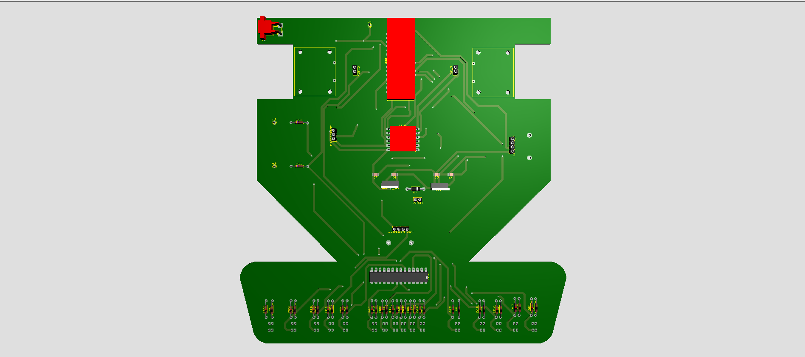
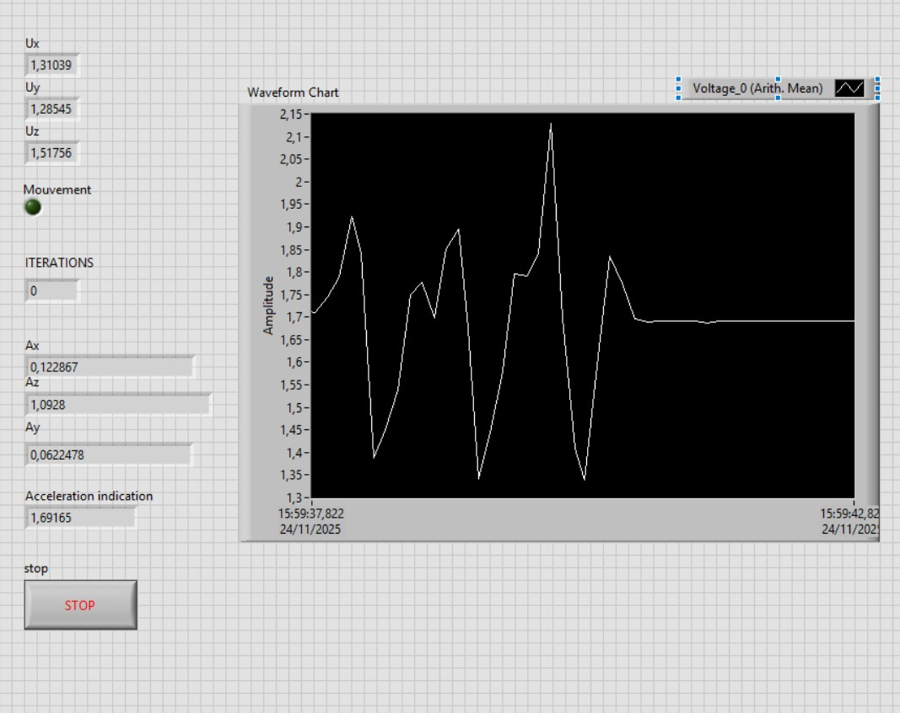
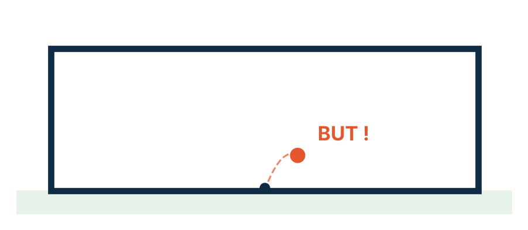
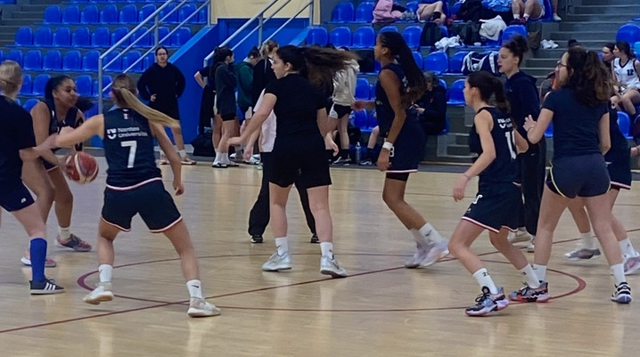
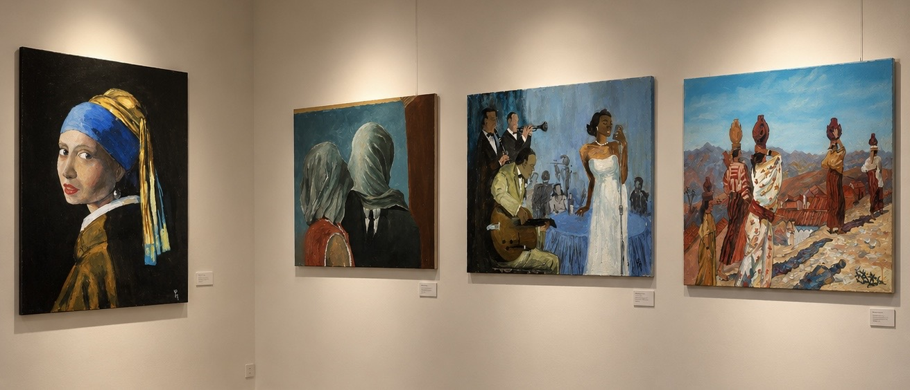
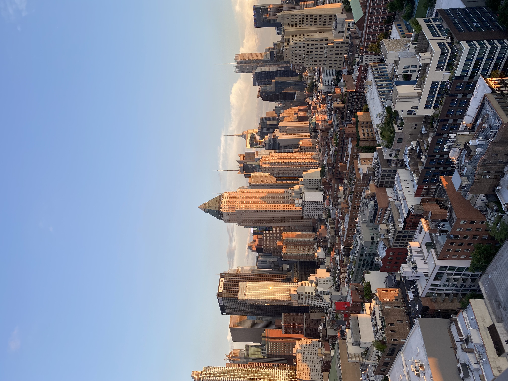

Diplôme d'ingénieur – ENSEEIHT, Toulouse INP Engineering degree – ENSEEIHT, Toulouse INP
Électrique, Électronique, Énergie et Automatique.
Electrical Engineering, Electronics, Energy and Automation.
Élève ingénieure en Électrique, Électronique, Énergie et Automatique en 1re année à l'ENSEEIHT.
First-year engineering student in Electrical Engineering, Electronics, Energy and Automation at ENSEEIHT.
Vous êtes au bon endroit ! Ici, vous trouverez des détails sur mon parcours scolaire, mes projets académiques et mon expérience professionnelle, ainsi que sur mes projets de mobilité et mon engagement civique. N'hésitez pas à me contacter si vous avez des questions. You are in the right place! Here you will find details about my education, my academic projects and my work experience, as well as my mobility plans and civic engagement. Feel free to contact me if you have any questions.
Électrique, Électronique, Énergie et Automatique.
Electrical Engineering, Electronics, Energy and Automation.
Génie Électrique et Informatique Industrielle, spécialité Électronique et Systèmes Embarqués.
Electrical Engineering and Industrial Computing, specialising in Electronics and Embedded Systems.
Lycée El Macir
Trois universités partenaires de l'ENSEEIHT, choisies pour leur niveau en génie électrique et pour la ville qui les accueille.
Three ENSEEIHT partner universities, chosen for their strength in electrical engineering and for the city around them.

L'école : l'une des meilleures universités techniques d'Europe, très reconnue en génie électrique, énergie et systèmes embarqués, avec une recherche très active.
The school: one of Europe's leading technical universities, highly regarded in electrical engineering, energy and embedded systems, with very active research.
La ville : Munich est un grand pôle industriel (Siemens, Infineon, BMW, Rohde & Schwarz), avec une excellente qualité de vie, et l'occasion d'améliorer mon allemand.
The city: Munich is a major industrial hub (Siemens, Infineon, BMW, Rohde & Schwarz), with a high quality of life, and a chance to improve my German language.

L'école : la plus ancienne université d'Australie et l'une des mieux classées au monde, avec une faculté d'ingénierie réputée en génie électrique et électronique.
The school: Australia's oldest university and one of the highest-ranked in the world, with a renowned faculty of engineering in electrical and electronic engineering.
La ville : Sydney est la plus grande ville d'Australie, un centre économique international, avec une immersion totale en anglais et une vie au bord de l'océan.
The city: Sydney is Australia's largest city and an international business hub, offering full English immersion and life by the ocean.

L'école : une université japonaise spécialisée en sciences et ingénierie, avec des formations en génie électrique et électronique.
The school: a Japanese university specialising in science and engineering, offering electrical and electronic engineering courses.
La ville : Tokyo est une capitale mondiale de l'électronique et de la robotique (Sony, Toshiba, NEC), et une immersion dans une culture très différente.
The city: Tokyo is a world capital of electronics and robotics (Sony, Toshiba, NEC), and an immersion in a very different culture.
Effectuer un stage en systèmes embarqués au sein d'un grand groupe international, pour découvrir un environnement de travail multiculturel et travailler en anglais.
Complete an embedded systems internship in a large international company, to experience a multicultural work environment and work in English.
Participer à une mission humanitaire au Népal avec HUMAN7, pour m'engager sur un projet utile et découvrir une autre culture.
Take part in a humanitarian mission in Nepal with HUMAN7, to contribute to a meaningful project and discover another culture.

Conception et programmation d'un robot Formule 1.
Design and programming of a Formula 1 robot.

Une application LabVIEW qui mesure l'accélération sur trois axes et compte les mouvements en temps réel.
A LabVIEW application that measures acceleration on three axes and counts movements in real time.

Un programme en C++ qui calcule la trajectoire d'un ballon soumis au vent et prédit si le tir est marqué.
A C++ program that calculates a ball's path in the wind and predicts whether the shot is scored.
Mes actions pour l'environnement et mon implication auprès des autres. My actions for the environment and my involvement with others.
Un atelier en équipe, basé sur les rapports du GIEC, pour relier les causes et les conséquences du dérèglement climatique. Il m'a montré le rôle des ingénieurs dans la conception de solutions plus sobres.
A team workshop, based on IPCC reports, linking the causes and consequences of climate change. It showed me the role engineers play in designing more sustainable solutions.
Une exposition sur le lien entre transition écologique et inégalités sociales. Elle m'a rappelé que les solutions techniques doivent aussi être justes et accessibles à tous.
An exhibition on the link between the ecological transition and social inequality. It reminded me that technical solutions must also be fair and accessible to all.
Une marche collective pour ramasser les déchets abandonnés dans les rues de Toulouse. Elle m'a montré qu'une action simple et collective peut avoir un impact visible.
A group walk to pick up litter in the streets of Toulouse. It showed me that a simple, collective action can have a visible impact.
Tutrice bénévole pour les étudiants de 1re année : explications, exercices et corrections. J'ai appris à reformuler une notion pour m'adapter à chacun.
Volunteer tutor for first-year students: explanations, exercises and marking. I learned to rephrase an idea to suit each student.
Mes passions en dehors de l'ingénierie. My passions outside engineering.

Basket-ball et badminton.
Basketball and badminton.
Participation à la coupe des IUT 2025.
Took part in the 2025 IUT Cup (French university institutes of technology).

Participation à plusieurs expositions.
My work has been shown in several exhibitions.

États-Unis, Canada, Espagne, Turquie.
USA, Canada, Spain, Turkey.
Ma Unique Value Proposition en 2-3 minutes (en anglais). My Unique Value Proposition in 2-3 minutes.
Développement logiciel et électronique autour d'un appareil de rééducation.
Software and hardware development for a rehabilitation device.
Présentation du département GEII aux lycéens et collégiens lors du Forum de l'étudiant de Lyon.
Presented the Electrical Engineering department to high school and middle school students at the Lyon Student Forum.